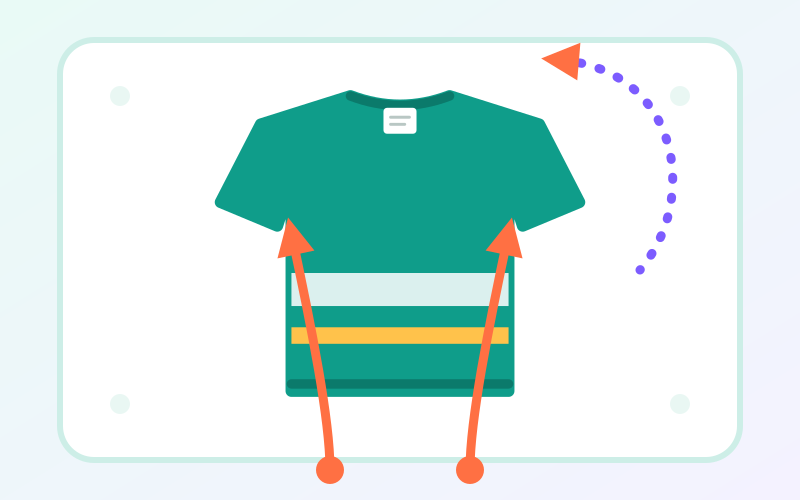
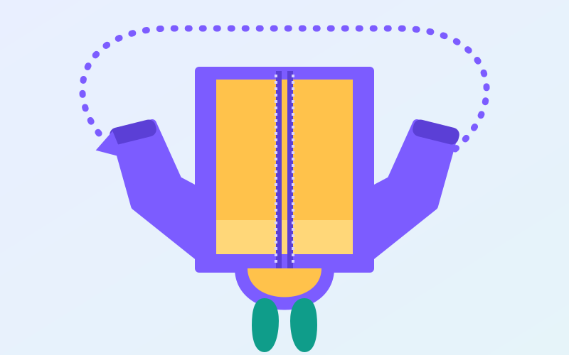
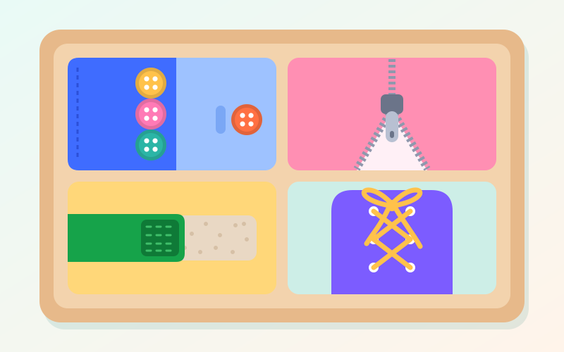

استقلال در کارهای روزمره
چگونه به کودک یاد بدهیم خودش لباس بپوشد؟ راهنمای کاردرمانی
لباس پوشیدن یکی از اولین قدمهای کودک به سوی استقلال است. با چند روش سادهی کاردرمانی — از یاد دادن قدم آخر تا ترفند کاپشن — میتوانید این مهارت را بدون دعوای صبحگاهی به کودک یاد بدهید.

چرا لباس پوشیدن برای کودک سخت است؟
لباس پوشیدن برای ما بزرگترها خودکار است، اما برای کودک چند مهارت را همزمان میخواهد: تعادل برای ایستادن روی یک پا هنگام پوشیدن شلوار، شناخت بدن برای اینکه بداند دستش کجای آستین است، همکاری دو دست و دستورزی برای دکمه و زیپ، برنامهریزی حرکتی برای ترتیب درست کارها، ادراک بینایی برای تشخیص جلو و پشت و رو و زیر لباس، و البته حوصله و توجه.
همین است که دشواری در لباس پوشیدن گاهی سرنخ خوبی است: نشان میدهد کدام مهارت پایه به کمک نیاز دارد.
از چه سنی چه انتظاری داشته باشیم؟
سنها تقریبیاند و هر کودک با سرعت خودش پیش میرود. یک نکته اما تقریباً همیشه درست است: درآوردن لباس زودتر از پوشیدنش یاد گرفته میشود.
- حدود ۱ تا ۲ سالگی: در لباس پوشیدن همکاری میکند، دست و پایش را دراز میکند، کلاه و جوراب را درمیآورد.
- حدود ۲ تا ۳ سالگی: لباسهای گشاد را درمیآورد، شلوار کِشی را با کمی کمک بالا میکشد و دکمههای درشت را باز میکند.
- حدود ۳ تا ۴ سالگی: تیشرت و شلوار کِشی را خودش میپوشد (گاهی پشتورو)، کفش چسبی را پا میکند و دکمههای درشت جلو را میبندد.
- حدود ۴ تا ۵ سالگی: جلو و پشت لباس را تشخیص میدهد، زیپ را بالا میکشد و بیشتر لباسهایش را تقریباً مستقل میپوشد.
- حدود ۵ تا ۷ سالگی: دکمههای کوچکتر را میبندد، سر زیپ کاپشن را جا میاندازد و بستن بند کفش را یاد میگیرد.
یاد دادن از قدم آخر (زنجیرهی معکوس)
کاردرمانگرها معمولاً لباس پوشیدن را از آخر یاد میدهند: شما همهی قدمها را انجام میدهید جز آخری، و کودک فقط قدم آخر را خودش انجام میدهد. وقتی آن را بیکمک انجام داد، دو قدم آخر با او، و همینطور تا اول. مثلاً برای شلوار:
- شما شلوار را تا زانوی کودک بالا میآورید؛ کودک فقط آن را تا کمر بالا میکشد.
- شما دو پا را داخل شلوار میکنید؛ کودک از مچ تا کمر بالا میکشد.
- شما شلوار را جلوی پای کودک باز نگه میدارید؛ کودک پاها را داخل میکند و بالا میکشد.
- کودک شلوار را برمیدارد، جلو و پشتش را پیدا میکند و تا آخر خودش میپوشد.
راز این روش این است که کار همیشه با موفقیت تمام میشود. لحظهی «تمام شد!» مال کودک است و همین انگیزهی دفعهی بعد را میسازد.
ترفند تیشرت: اول دستها، بعد سر
تیشرت را برعکس روی تخت پهن کنید: پشتش رو به بالا و لبهی پایینش نزدیک کودک. کودک هر دو دستش را از لبهی پایین وارد بدنه و بعد آستینها میکند، دستها را بالا میبرد تا یقه از روی سرش رد شود و بعد تیشرت را پایین میکشد. با این روش، تیشرت تقریباً همیشه درست و از رو پوشیده میشود.

ترفند کاپشن: چرخاندن از روی سر
پوشیدن کاپشن به این دلیل سخت است که دست دوم باید آستینی را پیدا کند که پشت سر کودک است. این ترفند مشکل را حل میکند:
- کاپشن را باز، با آستر رو به بالا، روی زمین پهن کنید.
- کودک کنار یقه یا کلاه بایستد؛ یعنی کاپشن از دید او وارونه است.
- خم شود و هر دو دستش را داخل آستینها کند.
- دستها را بالا ببرد و کاپشن را از روی سرش به پشت بچرخاند؛ کاپشن روی شانههایش مینشیند.

دکمه، زیپ و بند کفش
اینها سختترین بخش لباس پوشیدناند، چون دستورزی دقیق میخواهند. بهتر است اول روی میز و جلوی چشم کودک تمرین شوند و بعد روی لباس خودش.

- دکمه: با دکمههای درشت و جادکمههای گشاد شروع کنید و اول «باز کردن» را تمرین کنید. روی لباس خود کودک، از دکمهی پایین شروع کند که جلوی چشمش است.
- زیپ: اول فقط بالا کشیدن زیپی که شما جا انداختهاید. یک حلقهی جاکلیدی به سر زیپ، گرفتنش را آسان میکند. جا انداختن سر زیپ کاپشن آخرین قدم است.
- کفش: پیش از کفش بنددار، کفش چسبی. برای تشخیص لنگهی چپ و راست، یک برچسب را از وسط نصف کنید و هر نیمه را داخل یک لنگه بچسبانید؛ وقتی کفشها درست کنار هم باشند، تصویر کامل میشود.
- بند کفش: روش «گوش خرگوشی» — دو حلقه درست کردن و گره زدن آنها به هم — برای بسیاری از کودکان از روش یکحلقهای آسانتر است. بند دورنگ (هر نیمه یک رنگ) کمک میکند کودک دو سر بند را گم نکند.
لباس مناسب برای دورهی یادگیری
- گشاد و ساده: شلوار کمرکِشی، یقهی باز و آستین گشاد؛ دکمه و زیپ را برای وقت تمرین نگه دارید.
- نشانهگذاری: یک نقطهی رنگی داخل پشت لباس یا جورابهایی با پاشنهی رنگی، تشخیص جلو و پشت را آسان میکند.
- نشسته بپوشد: شلوار و جوراب را روی زمین یا یک صندلی کوتاه بپوشد تا تعادل مانعش نشود.
- شب قبل آماده کنید: لباسها را به ترتیب پوشیدن کنار هم بچینید؛ کودک فقط باید از یک سر شروع کند.
صبحهای شلوغ: چند نکته برای والدین
- تمرین را به وقت آرام ببرید: عصر یا آخر هفته، نه صبحی که دیر شده است. صبحها کمک کنید، عصرها تمرین.
- کارتهای تصویری: مراحل لباس پوشیدن را با چند عکس یا نقاشی به ترتیب روی در کمد بچسبانید.
- انتخاب محدود: «تیشرت آبی یا قرمز؟» حس کنترل میدهد، بیآنکه صبح به جلسهی انتخاب لباس تبدیل شود.
- بازی کنید: مسابقه با ساعت شنی، لباس پوشاندن به عروسک، یا بازی نقش با لباسهای گشاد بزرگترها.
- تلاش را ببینید: «خودت آستین را پیدا کردی!» از «بالاخره!» خیلی بیشتر کار میکند.
چه وقت کمک بگیریم؟
- در ۴ تا ۵ سالگی هنوز در درآوردن لباسهای ساده هم کمک زیادی لازم دارد.
- تعادلش آنقدر ضعیف است که حتی نشسته پوشیدن شلوار و جوراب برایش سخت است.
- به برچسب، درز جوراب یا جنس لباس آنقدر حساس است که هر صبح به گریه و دعوا میکشد.
- با وجود تمرین، ترتیب مراحل را گم میکند؛ مثلاً کفش را پیش از جوراب میپوشد.
این نشانهها میتوانند به مهارت درکیـحرکتی، دستورزی یا پردازش حسی مربوط باشند؛ جلسهی ارزیابی مشخص میکند کدام. برای آشنایی بیشتر با این مسیر، کاردرمانی کودکان چیست؟ را بخوانید.
این مقاله برای آگاهی والدین نوشته شده و جای ارزیابی تخصصی را نمیگیرد.